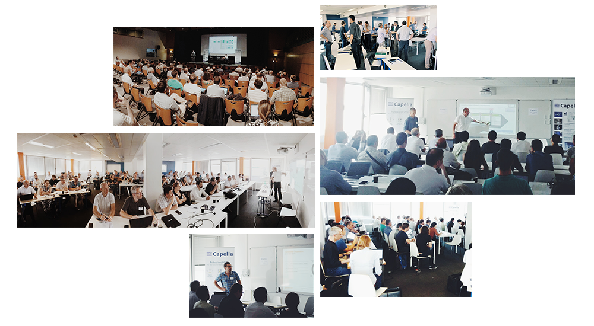
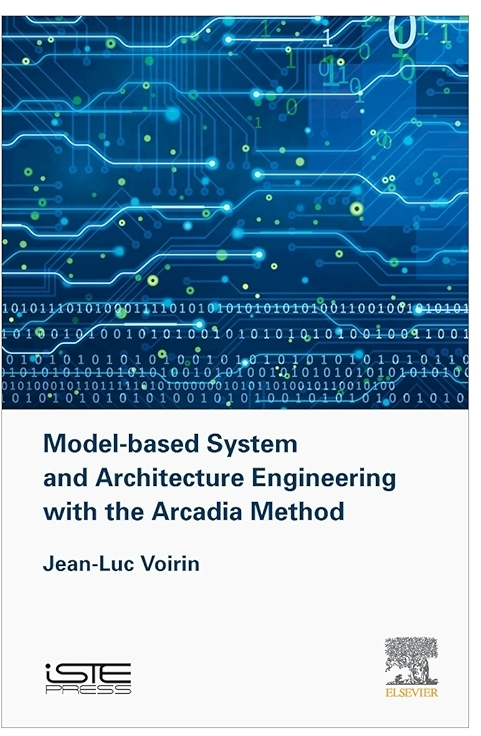

SLE 2026 Keynote
We built the languages.
That was the easy part.
Act 1
We built the languages.
For more than twenty years
We made languages more formal, more expressive, better tooled.
EMF
Acceleo
GMF
Xtext
Sirius
Capella
And it worked.
Technically.
Act 2
Then languages met organizations.
The hard questions changed
Who uses the language?
How do people learn it?
Who is allowed to change it?
How do teams collaborate?
How does it survive fifteen years?

Transmission
A language needs an ecosystem to live.
People need places to meet, stories to learn from, and material to transmit practice.



At some point, the tool disappears. What remains is the language people use to think together.
Act 3
We confused expressivity with usability.
We kept making languages more expressive.
But users were often asking for something else.
Act 4
2019.
I was convinced modeling had to become more accessible. I was much less certain we could rebuild the foundations required to make it happen.
The Web is not just a technology choice.
It is a constraint.
Instant access
Shared state
Continuous evolution
Lower ceremony
From editor to platform
A language needs a platform to live.
Language
Experience
Collaboration
Capitalization
Act 6
The next twenty years.
A model gives agents something to work on.
Something we can inspect, validate, and correct.
Twenty years ago, we thought our challenge was to build better languages.
Today, the challenge is different.
A language is not finished when it is defined.
It is finished when people can practice it.
We built the languages.
Now we have to make them live.
With people. With organizations. With tools and agents.